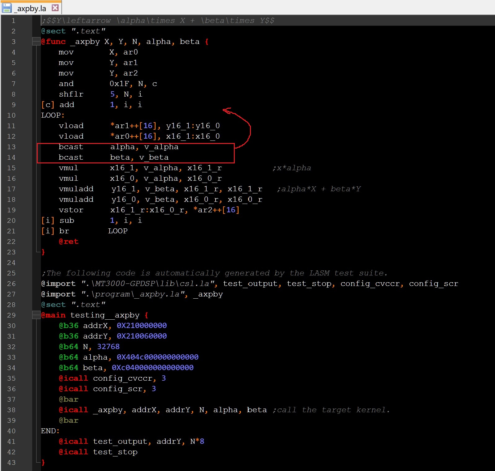

Latest update: 2024-11-5
To reduce the complexity of VLIW assembly while maintaining its ability to implement deep optimizations, we specify a set of assembly-like syntax rules and a concise set of pseudo operations, which are uniformly named LASM IR. Based on LASM IR, LASM compiles not only subprogram libraries but also full-scale programs with multi-nested loops and function calls. The LASM IR-described program, also called the LA program. Here is an example (_axpby.la):

LASM IR offers robust hardware manipulation capabilities and is more user-friendly than VLIW assembly language. It provides a set of assembly-like syntax rules and concise pseudo-operations, enabling efficient program description. By supporting multiple file references, function calls, and return mechanisms, LASM IR allows complex programs to be broken down into multiple functions. With LASM IR, VLIW programmers no longer need to manage instruction parallelism, functional unit allocation, instruction latency, or register allocation, focusing solely on instruction semantics and program design. Additionally, programmers can use variables without additional declarations (in other words, use-as-declaration) and have the flexibility to specify physical registers, functional units, and inter-instruction parallelism directly.
Programs written in LASM IR are eventually parsed into a single, persistent memory structure called LACTX, which remains active throughout the LASM optimization pipeline. Before entering the LASM scheduling framework, LACTX undergoes a code refinement phase aimed at mitigating the adverse effects of any user-ignored programming behaviors that might hinder further optimizations. LASM‘s refinement techniques primarily focus on eliminating redundant operations and simplifying the program structure. These techniques include inline function expansion, inter-procedural optimization, context-aware call-point movement (to reduce runtime stack traffic), dead code elimination (DCE), and loop invariant code motion (LICM).
Here are all the block types in LACTX:
class iblock : public mem::address { //All kinds of iblocks.
public:
enum class Kind :uint8_t {
ROOT, // (all phase)
ULAB, // to be LAB or LOOP. (building phase)
LAB, // (all phase)
LOOP, // (all phase)
BASE, // use to store instructs (all phase)
TBD, // (building phase)
SWAP, // used to store blocks temporarily. (optimization phase)
};
//...
}
Basic constants include integer constants, floating-point constants, and character constants.LASM reserves 64 bits for each basic constant. Basic constants are not sign-extensible. If a constant is specified with fewer than 64 bits, LASM calibrates its value from the right, padding any unspecified bits with zeros. If a constant is specified with more than 64 bits, LASM will simply truncate it, taking only the lower 64 bits (the truncation will be fed back to the user in the form of a warning).Floating-point constants in non-machine-code formats are automatically expressed as 64-bit double-precision following the IEEE754 standard.
//:) Brief
Integer constants come in four numeric systems: binary, octal, decimal, and hexadecimal.
Only decimal constants have numeric meanings, all other integer constants are treated as 64-bit complements.
The range of decimal constants is -9,223,372,036,854,775,808 ~ 18,446,744,073,709,551,615.
| Numeral system | Format | Meaning | Examples |
|---|---|---|---|
| Binary | ^0[bB][10]+ | Complement | 0b101、0B1001 |
| Octal | ^0[oO][0-7]+ | Complement | 0O5、0o11 |
| Decimal | [+-^][0-9]+ | Numeric | 5、9、-2 |
| Hexadecimal | ^0[xX][0-9a-fA-F]+ | Complement | 0x5、0x9 |
There are three types of floating-point constants:
(1) machine-code representations following the IEEE754 standard (only supported for direct use in instructions, otherwise LASM defaults to integer constants);
(2) decimal number forms with a decimal point, e.g., 1.2, -1.53;
(3) scientific notation, e.g., 1e-2, -1e2, 2e + 5.
//:) Case 1
SMOVI 0xBFF8000000000000, R10 //Direct use of machine code representation following IEEE754.
SMOVI 1e-2, R11 // 1e-2 -> 0x3F847AE147AE147B
SFMULD R10, R11, R10 // -1.5 * 1e-2 = -0.05, R10 = 0xBF8EB851EB851EB8
//:) Case 2
SMOVI (-1+2.0)*3, R10 //(-1+2.0)*3 -> 0x4008000000000000
SMOVI 2.0, R11 // 2.0 -> 0x4000000000000000
SFMULD R10, R11, R10
//Note that if the constant expression has a floating-point constant, the result of the expression is in double-precision IEEE754 format.
//If there is no floating point constant in the expression, the result of the expression is a 64-bit integer constant.
SMOVI (-1+2)*3, R10 // 0x0000000000000003 -> R10
//:) Other cases detailed in lasm-pseudo.md.
Character constants are single characters enclosed in single quotes. Internally, characters are represented as 8-bit ASCII characters. If single quotes are part of a character constant, just add the '\' before them. Character constants consisting of only two single quotes are valid and are assigned 0 by default.
//:) Cases
'a' -> 0x0000000000000061
'C' -> 0x0000000000000043
'\'' -> 0x0000000000000027
'' -> 0x0000000000000000
'\n' -> 0x000000000000000A
'\\' -> 0x000000000000005C
Symbolic constants consist of two types, one defined by the @bN,@bh,@bf or @bd, and the other being properties of address indicators. Here, we focus on symbolic properties.
Symbolic properties are symbols used to describe properties specific to address indicator symbols. Symbolic properties include .cnt (The number of data elements) and .gra (The number of bytes required by a data element). For example, @usect ".bss", Arr, @b10, 128, where Arr is an address indicator, Arr.cnt = 128, Arr.gra = 2 Bytes.
Complex constants are combinations of basic constants, categorized as strings and constant expressions.
A string is an ordered sequence of multiple character constants. LASM performs character concatenation operations in character order, resulting in a hexadecimal representation of an integer constant.
:) Cases
@b32 x, "abc" // -> 'a', 'b', 'c' -> 0x616263 -> 0x00616263
@b32 y, 'a'<< 4+'b' // -> 0x6162 -> 0x00006162
@sect ".data", addx,@b8, "ab", 'c' // 'ab', 'c' -> 0x6162, 0x63 -> 0x62, 0x63
@sect ".data", addx, @b4 "ab", 'c' // 'ab', 'c' -> 0x6162, 0x63 -> 0x2, 0x3
@b1 x, 'c' // 'c' -> 0x01
@sect ".data", addx, @b16,'a'<< 4+'b', 'c'<<4+'d' // 0x6162, 0x6364
A constant expression is a sequence of basic or symbolic constants separated by arithmetic operators. Legitimate constant expressions are divided into two categories: simplifiable and non-simplifiable. Non-simplifiable constant expressions contain symbols whose values cannot be determined at the compilation stage, i.e., address indicators.
//:) Operands (i.e., basic or symbolic constants)
1. Three basic constants (integer constants, non-IEEE754 format floating-point constants, character constants).
2. Address indicators (including memory first address, function name, and in-function label).
3. Symbolic Constant.
//:) Operator
Constant expressions support 23 operators, including unary and binary operators. The binary operators include six logical comparison operators. The table below lists all the operators and their priorities supported by LASM IR.
Note that any constant expression containing "/" is calculated as double-precision following the IEEE754 standard.
The following table lists the operation priority of each operator, the smaller the value the higher the priority.
| Priority | Operator | Description |
|---|---|---|
| 0 | ( | Left bracket. |
| ) | Right bracket. | |
| 1 | + | Unary plus. |
| - | Unary minus. | |
| ~ | Bitwise negation. | |
| ! | Logical negation. | |
| 2 | * | Multiplication |
| / | Signed division. | |
| // | Signed division.(round down) | |
| % | Signed remainder. | |
| 3 | + | Addition. |
| - | Subtraction. | |
| 4 | << | Shift left. |
| >> | Arithmetic shift right. | |
| 5 | < | Signed less than comparison. |
| <= | Signed less than or equal comparison. | |
| > | Signed greater than comparison. | |
| >= | Signed greater than or equal comparison. | |
| == | equality comparison. | |
| != | Inequality comparison. | |
| 6 | & | Bitwise and. |
| ^ | Bitwise exclusive or. | |
| | | Bitwise or. | |
| 7 | && | Logical and. |
| || | Logical or. |
//:)Syntax
@bN symbol_name, symbol_value
//symbol_name: ^[a-zA-Z_][a-zA-Z0-9_]*
//N:[1, 64];
//symbol_value can be
//1. integer constants, floating-point constants other than IEEE754 format, character constants;
//2. strings, constant expressions;
//3. symbolic constants (defined by @bN, @bh, @bf, @bd) and properties (.gra, .cnt).
//Note that
//1. symbol_value is first expanded with 64 bits and then truncated with the lower N bits;
//2. strings are processed character by character, starting at the top;
//3. Floating-point constants in non-IEEE754 formats are converted to double-precision following the IEEE754 standard.
//:) Case 1 - As arguments to other pseudo-operations.
@align 4
@usect ".bss", x, @b32, 10 //Reserve a 40 bit contiguous space with the first address aligned with 4 bytes and recommended to access x in the @ b32 storage format.
//Here, the default is @ align 1,0
@sect ".data", x, @b8, 0x2, -2, 255, 'A' // 0x02, 0xfe, 0xff, 0x61
//:) Case 2- Integer constant, floating-point constant, character constant.
@b16, x, -1 //Convert -1 to a 16 bit complement and assign it to x, i.e. x=0xFFFF. In fact, it extends unsigned to 64 bit machine code: 0x000000000000FFFF.
@b64 x, 0o3
@b64 x, 0b101
@sect ".rodata", x, @b8, 0x2, -2, 255, 'A' // 0x02, 0xfe, 0xff, 0x61
@sect ".data", x, @b1, 0x2, -2, 3, 0 // 0x00, 0x00, 0x01, 0x00
@sect ".data", x, @b8, 1.2, -1e2 // 0x3FF3333333333333, 0xC059000000000000 -> 0x33, 0x00
//:) Case 3 - Combining Constants (strings, constant expressions).
@sect ".data", x, @b9, 0x2, -0b10, 6*(3+2) // 0x0002, 0x01fe, 0x001e; x.gra=2Byte
@sect ".data", x, @b8, "ab", 'c' // 'ab', 'c' -> 0x6162, 0x63 -> 0x62, 0x63
@sect ".data", x, @b4, "ab", 'c' // 'ab', 'c' -> 0x6162, 0x63 -> 0x2, 0x3
@b1 x, "ab" // 'ab' -> 0x00
@b1 x, 'c' // 'c' -> 0x01
@sect ".data", x, @b16, 'a'<< 4+'b', 'c'<<4+'d' // 0x6162, 0x6364
//:) Case 4 - Symbolic constants (defined by @bN, @bh, @bf, @bd) and properties (.gra, .cnt).
@b32 thr, 0x3
@b32 x, (thr<<1)+100|34 //Referencing the symbolic constant: thr.
@bh a, 1.2 // 0x3CCD -> 0x0000000000003CCD
@b16 b, 1.2 // 0x3FF3333333333333 -> 0x0000000000003333
@b4 c, -2 // 0xFFFFFFFFFFFFFFFE -> 0x0x0000000000000E
@sect ".data", x, @b7, a, b, c, -2 // 0x4D, 0x33,0x0E, 0x7E
//Specifically, to reduce precision loss, for float type signed constants, the original value will be used when referenced.
//For example, when referencing a, the conversion is equivalent to @b7 x, 1.2
@sect ".data", a2, @bf, 1.2, 1.4, -1.5, 1e-2 // 0x3F99999A, 0x3FB33333, 0xBFC00000, 0x3C23D70A
@usect ".bss", b2, @b32, 10
@b16 x, -0x3, a2.gra, a2.cnt, b2.cnt // 0xFFFD, 0x0004, 0x0004, 0x000A
//:) Brief for @bh, @bf, @bd:
There are three types of floating-point constants:
1. Machine-code representations following the IEEE754 standard (only supported for direct use in instructions, otherwise LASM defaults to integer constants);
2. Decimal number forms with a decimal point, e.g., 1.2, -1.53;
3. Scientific notation, e.g., 1e-2, -1e2, 2e+5.
//Note that floating point constants in non-machine code form are converted to double precision according to the IEEE 754 standard.
//:)Syntax
@bh symbol_name, symbol_value //Half precision IEEE754 format. {1,5,10}
//symbol_name: ^[a-zA-Z_][a-zA-Z0-9_]*
//symbol_value can be
//1. integer constants, floating-point constants other than IEEE754 format, character constants.
//2. strings, constant expressions.
//3. symbolic constants (defined by @bN, @bh, @bf, @bd) and properties (.gra, .cnt).
//:)Syntax
@bf symbol_name, symbol_value //Single precision IEEE754 format. {1,8,23}
//symbol_name: ^[a-zA-Z_][a-zA-Z0-9_]*
//symbol_value: refer to @bh
//:)Syntax
@bd symbol_name, symbol_value //Double precision IEEE754 format. {1,11,52}
//symbol_name: ^[a-zA-Z_][a-zA-Z0-9_]*
//symbol_value: refer to @bh
//:) Case 1 - As arguments to other pseudo-operations.
@align 4
@usect "bss", x, @bd, 10 ////Reserve a 80 bit contiguous space with the first address aligned with 4 bytes and recommended to access x in the @bd storage format.
@bh x, -1 //Convert -1 to 16 bit IEEE754 format and assign it to x, i.e. x=0xBC00 (actually represented as 64 bit machine code: 0x0000000 BC00).
//:) Case 2- Integer constant, floating-point constant, character constant.
@bd x, 0x1 // 0x3FF0000000000000
@bd x, -2 // 0xC000000000000000
@bd x, 1.2 // 0x3FF3333333333333
@bd x, -1e-2 // 0xBF847AE147AE147B
@bd x, 'a' // 0x4058400000000000
//:) Case 3 - Combining constants (strings, constant expressions).
@bf x, 3+0x4*(1.2-0.384)-'a' //10 ; -> @bf x, -2.736 -> x=0xC02F1AA0
@sect ".data", x, @bd, 6*(3+2), 6*(3+2.0) // 0x403E000000000000, 0x403E000000000000
@sect ".data", x, @bd, "ab", 'c' // 0x4058400000000000, 0x4058800000000000
//:) Case 4 - Symbolic constants (defined by @bN, @bh, @bf, @bd) and properties (.gra, .cnt).
@bh a, 1.2 // 0x3CCD
@b4 b, -2 // 0xFFFFFFFFFFFFFFFE -> 0x0E
@sect "xdmeifj", x, @bd, a, b, -2 // 0x3CCD,0x0E,-2 -> 0x3FF3340000000000,0x402C000000000000,0xC000000000000000
//Note that the above conversion process is 1.2(@bh)=>double, not 0x3CCD=>double.
@sect ".data", a2, @bf, 1.2, -1.5, 1e-2 // 0x3F99999A, 0xBFC00000, 0x3C23D70A
@usect "bss", b2, @b32, 10
@sect ".data", x, @bd, a2.gra, a2.cnt, b2.cnt // 4,3,10 -> 0x4010000000000000,0x4030000000000000,0x4024000000000000
:)Brief
1. The segment can be divided into initialization segment (@sect) and uninitialized segment (@usect).
2. After completing @usect, LASM will automatically revert back to the previous segment; After completing @sect, a new segment will start (if the segment name is different).
A typical case:
@sect ".data", x, @b64 x, 13, 14
@usect ".bss", sym, @bh, 32 //The segment name is .bss
@sect ".text" //End .data, start .text
@func __start { //__start is pushed into the .text
}
3. Uninitialized segment, usually allocated in RAM, is simply a reserved space. Programs can use this space to generate and store variables during runtime.
//:)Syntax
@sect "section_name" //Indicate that the following instructions and data are located in the initialization section "section_name".
or
@sect "section_name", symbol_name, T, val1 [, val2[, ...]] //Initialize one or more consecutive T-type data in the segment "section_name".
//symbol_name: ^[a-zA-Z_][a-zA-Z0-9_]*
//T can be @bN, @bh, @bf or @bd.
//symbol_name represents the first address.
//val1,val2,... can be
//1. integer constants, floating-point constants other than IEEE754 format, character constants.
//2. strings, constant expressions.
//3. symbolic constants (defined by @bN, @bh, @bf, @bd) and properties (.gra, .cnt).
//:) Case 1
@sect "custom"
@func _daxpy X,Y, N {
}
//:) Case 2
@sect ".data", arr_x, @b32, 1,3, 5,-3,4
//:)Syntax
@usect "section_name", symbol_name, T, count
//symbol_name: ^[a-zA-Z_][a-zA-Z0-9_]*
//symbol_name points to the first byte of reserved space.
//T can be @bN, @bh, @bf or @bd.
//count: the quantity of data in the reserved space.
//The size of reserved space(bytes) = sizeof(T) * count
//The starting position of the space can be set through @align, with a default alignment of 1 byte and an offset of 0 bytes.
//:) Case 1
@usect "custom", _sym, @bh, 1
@align 8, 1
@usect ".bss", x, @b32, 128 //Align the first address with 8 bytes, offset +1.
//:)Syntax
@func symbol_name [arg1[, arg2[, ...]]] { //Declare regular function
...
}
//symbol_name: ^[a-zA-Z_][a-zA-Z0-9_]*
//function input: arg1,arg2,...: ^[a-zA-Z_][a-zA-Z0-9_]*
//The symbols declared by this pseudo-operation are global within the file, and the user needs to ensure that the function is uniquely named within the file when writing the program.
//If the function is referenced by another file, user need to ensure that the function is uniquely named within these two files;
//otherwise, LASM will report an error.
//:)Syntax
@main symbol_name [arg1[, arg2[, ...]]] { //Declare entry function
...
}
//The usage of @main and @func is basically the same.
//The difference is that the entry function is unique, i.e. a project can contain at most one entry function declaration, otherwise LASM will report an error, and @main does not allow parameters to be passed in.
//Note that if @main does not exist in the project, LASM will optimize all regular functions in the project, which will eventually be exported to the source file in the topological order in which they are called, otherwise LASM will only optimize the regular functions that have an ancestor in the entry function.
//:)Syntax
@ret [val1[, val2[, val3[, ...]]]]
//val1, val2, ...：^[a-zA-Z_][a-zA-Z0-9_]*
//The return value can be a constant, a constant symbol, a physical register, and any variable within a function body
//The use of @ret is relatively free, and the following three cases are discussed:
//a) @ret without a return value: the jump instruction is executed directly at the end of the current function;
//b) @ret with return value: the current function is terminated by passing the return value and then executing the jump;
//c) @ret not given: the called function must be given @ret, otherwise an error is reported.
//Used to mark the location of the program
//:) General Labels.
label:
//:) Labels with loop information.
label: [min_iteration[, max_iteration]]
//label: ^[a-zA-Z_][a-zA-Z0-9_]*
//min_iteration: minimum number of loop iterations; min_iteration > 0
//max_iteration: maximum number of loop iterations.
//Note that
//1. min_iteration and max_iteration are the actual number of iterations of the loop body, independent of the initial value of the loop count.
//2. LASM will recognize the loop structure in the program (for all loop types), and will not allow cross loops.
//An example of loop parsing in LASM:
i_am_loop_1: i_am_loop_1 {
... ...
i_am_loop_2: 10000,200000 i_am_loop_2 {
... ...
SSUBU r_9, r_0, r_0 ...
[r_0] SBR i_am_loop_2 }
SADD R13, R12, R13 -> ...
SLT R13, R9, r_0
[r_0] SBR i_am_loop_1 }
... ...
i_am_loop_3: 20000 i_am_loop_3 {
... ...
[r_1] SBR i_am_loop_3 }
//:)Syntax
@import "filename", func1[, func2[, ...]] //Identifies one or more functions used in the current file and defined in other files.
//:) A case
//in the file: a.la:
@sect "text"
@func test a,b,c {
...
@ret 1
}
@func test999 {
...
@ret
}
//in the file: b.la.
//b.la imports two functions from a.la, one is test and the other is test999.
@import "a.la", test, test999
//:)Syntax
@call function_name, [arg1[, arg2[, ...]]]) [,= ret1[, ret2[, ...]]]
//function_name is the name of the function being called, arg1, arg2, ... are the input parameters of the called function, and ret1, ret2, ... denote the return output of the called function, and ret1, ret2, ... denote the return output of the called function.
//Input parameter types include constants, symbolic constants, and variables. Note that the input and return parameters must match the called function in number and type, and the called function must end with the @ret pseudo-operation.
//:) Case 1
@call somefunc, var_1, var_2, var_3,= ret_1, ret_2
//:) Case 2
@call somefunc, var_1, var_2
//:) Case 3
@call somefunc,= ret_1
//:) Case 4
@call somefunc
@icall is used in the same way as @call.
The difference is that calls declared via @icall may trigger function inlining, which means that there is no longer a need to protect the context of the call point and avoids the overhead of jump operations.
The conditions for enabling @icall are strict.
First, LASM automatically checks the legality of inlining the called function, and if the called function does not satisfy the inlining condition, @icall will be demoted to @call.
Second, inlining operations may lead to increased register pressure given the active variables in the call-point context, and for this reason, inlining will be disabled when LASM detects excessive register pressure.
//:)Syntax
@asg symbol, reg ; 为symbol指定寄存器
//When specifying a register group, the complete form must be given, and it is not allowed to assign separate values to parts of the register group.
//:) Case 1
@asg ar_2, AR0
@asg v_1:v_0, VR5:VR4
SMVAIA 1, ar_2
VLDDW *ar_2++, v_1:v_0
//After the execution of @asg.
SMVAIA 1, AR0
VLDDW *AR0++, VR5:VR4
//:)Syntax
@dreg r1 [,r2 [,r3[,...]]] //Specify physical registers that are disabled during the register allocation phase.
//Note that this pseudo-operation does not disable physical registers that have been assigned by the user or are already in use by the program.
//:) Case 1
@dreg AR8, R11, VR1, VR0
//:)Syntax
@align alignment [, offset] //Specify the starting position of the first next storage-related symbol.
//alignment: [0-9]+；It specifies the minimum amount of alignment required by the allocated space, which defaults to 4 bytes.
//offset: storage offset, optional parameter. It ensures that the next allocated space appears on the specified storage boundary, default is 0 bytes.
//:)Syntax
@mdep sym1, sym2[, sym3[, ...]] //Declare optimization of multiple memory address correlation within a segment.
//sym1,sym2,...: ^[a-zA-Z_][a-zA-Z0-9_]*
//Note that LASM assumes that there are no memory dependencies within a function.
//:) Case 1
@align 8, 2
@usect "bss", x, @bh, 32 //x is 8-byte aligned, with a 2-byte offset.
//:) Case 2
@align 4
@sect ".data", x,@b32, 1,2,3 //The address referred to by x will be 4-byte aligned.
@usect ".bss", y, @bh, 32 //The address indicated by y will be aligned by default.
//:) Case 3
@sect "text"
@align 4 //Only valid for the first occurrence of the next address.
@func XXX a,b,c { //The address referred to by XXX will be aligned with 4 bytes.
...
}
//:)Syntax
@icp N //Copy the first instruction or instruction stream next N times.
//:) Case 1
@icp 3
vstor VR63, *++AR2[16]
//After processing:
vstor VR63, *++AR2[16]
vstor VR63, *++AR2[16]
vstor VR63, *++AR2[16]
//:) Case 2
@icp 2
vstor VR63, *AR2++[32]
| vstor VR63, *+AR2[16]
//After processing:
vstor VR63, *AR2++[32]
| vstor VR63, *+AR2[16]
vstor VR63, *AR2++[32]
| vstor VR63, *+AR2[16]
//:)Syntax
@bar //Used to isolate contextual optimizations and be able to locate the results of optimizations for a particular piece of code.
//:) Case 1
@icall _dsp_axpy, X,Y, N ,alpha,=res
@bar
@icall _print,0x400000000,8192*4
//:) Case 2
LOOP: 1, 100
@bar
@icall dat_copy, CHANNEL0, addrX+CORE_ID*N_INC, 0X11, 0X12, 0x13
[c] SSUB 1, c, c
[c] SBR LOOP
//The function dat_copy after inlining will be blocked by @bar and not raised outside the loop.
In LASM IR, pseudo-operations can be categorized into global pseudo-operations, local pseudo-operations and free pseudo-operations according to their scope. The global or localized nature of a symbol is determined by the internal or external position of its pseudo-operation relative to the function body. Local pseudo-operations can only be used inside the function body, global pseudo-operations can only be used outside the function body, and free pseudo-operations have no limitation on the scope of use.
a) Global Pseudo-operation：@func, @main, @sect, @usect, @align, @import.
b) Local Pseudo-operation: label:, @mdep, @ret, @call, @icall, @asg, @icp, @bar, @dreg.
c) Free Pseudo-operation：@bN, @bh, @bf, @bd.
Note that for free pseudo-operations, the associated symbols are localized if they are used inside the function body, and global if they are used outside the function body.